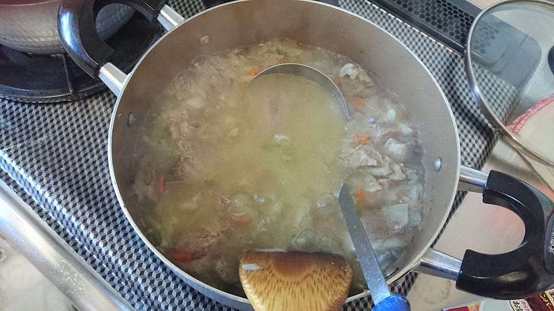
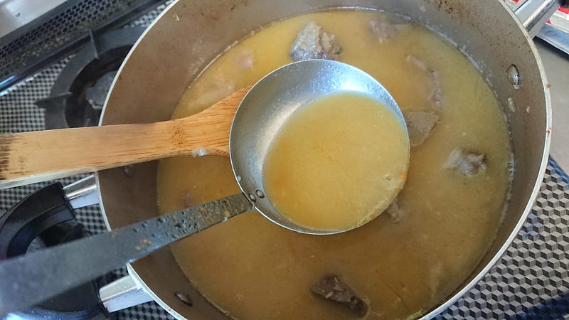
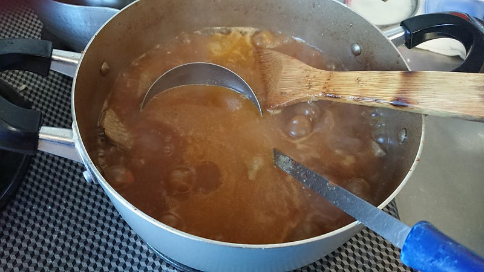
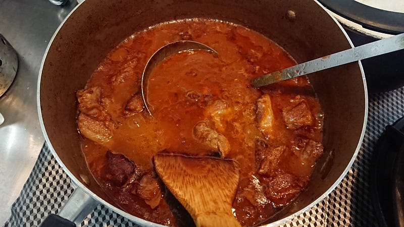
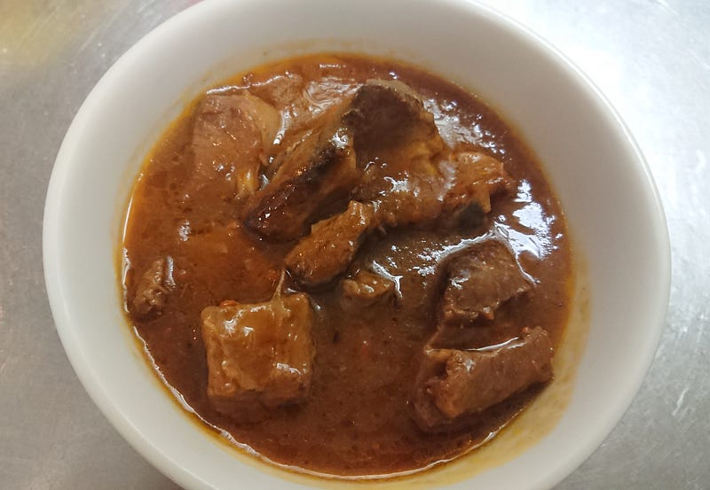

残ったanova調理済みラムでラムシチュー的ななにか
残ったanova調理済みラムでラムシチュー的ななにか
正月はお節とか雑煮だけでは和食ばかりで飽きるので、実家に行くときはいつもなにがしかの肉を仕込んでいってる。去年は鴨肉だったが、今回はラム肉にした。…が、売れ残ってしまったので持って帰ってシチュー的なものに改造したらすごい美味しくできた。
肉の部位はラムショルダー。以前も紹介したことある。
今回実家でやったのははanovaで57.5℃14時間したのち、小林銅蟲先生的なガリバタ醤油ソースでからめたもの。
…が、人数に対して多すぎた。半分弱残ってしまったので、冷凍して持って帰ってきた。
最初の調理が元日で、本日1月３日では、それから丸二日経ってしまってるのでさすがにそのまままたガリバタ醤油というわけにはいかない。
そこで、煮る。具体的にはシチューを作る。
とはいえ、わざわざゴロゴロ野菜を入れる感じでもないので、冷蔵庫で年を越したクズ野菜を適当に一緒ににてドロドロにしてしまうことにする。あとはデミグラスソースとかで適当にまとめればよいだろう、ということで見切り発車。
冷蔵庫にあったのはキャベツ、ニンジン、タマネギ。これらを適当に小さく切って、ラムと一緒にグダグダに煮てしまう。

ラムから出汁と脂がでるわでるわ。羊肉ってその香りを嗅ぐと、絶対にバターと相性いいと思うよね？あとで絶対バター落としちゃおう。俺、決めた。
野菜も大分グダグダになってきたところで、一旦ラム肉は避難して、バーミックスをつっこんで野菜を跡形も無く崩す。

これ、ポルトガルとかで食べてた野菜スープの色やんけ…なるほど。同じ事だもんな。
この時点で肉の硬さを確認。手で押すとちょっと硬い感じがしたけど、食べてみるとホロホロ崩れる感じで、煮物としては最高。ただ、ここまでまだ全く味付けをしてなかったので、全然おいしくない。肉はもうダシガラだし…
で、ここから味付け。野菜コンソメ、ケチャップ少量、うちにあったハインツのデミグラスソースを一箱分投入。ここからドロドロに煮詰めたかったので敢えて最初は塩を本当に軽ーく追加。

この時点では見た目はただのラムカレー。ここから弱火で煮詰めて、適当なとろとろ感が付くまで我慢。そこから最後の塩味調整をして、バターを10g。
冷ましておいて、食べる前に再加熱。

電気の関係でちょっと赤く見えるけど、まぁ基本はカレーっぽい色。良い感じに煮詰まってて、ドロドロ。

シチューにするとラムの香りがよりたつ？気がする。なのでお好きな人じゃないと駄目かもしれない。が、anovaでしっかり下準備をしたせいか肉はすごく良い感じのホロホロ。
脂身も柔らかく、しっかりかみ切れる。だけど同時にコラーゲンっぽさもしっかり味わえて、ラム肉好きにはたまらん。
そしてこのソース、悪魔的に炭水化物に合う。僕はおかわりをしてしまい、完全に食べ過ぎました。焼いただけの肉もうまいけど、こうやって煮たラムもたまらんなー。
次回以降もこのシチューは採用決定。うまかった…